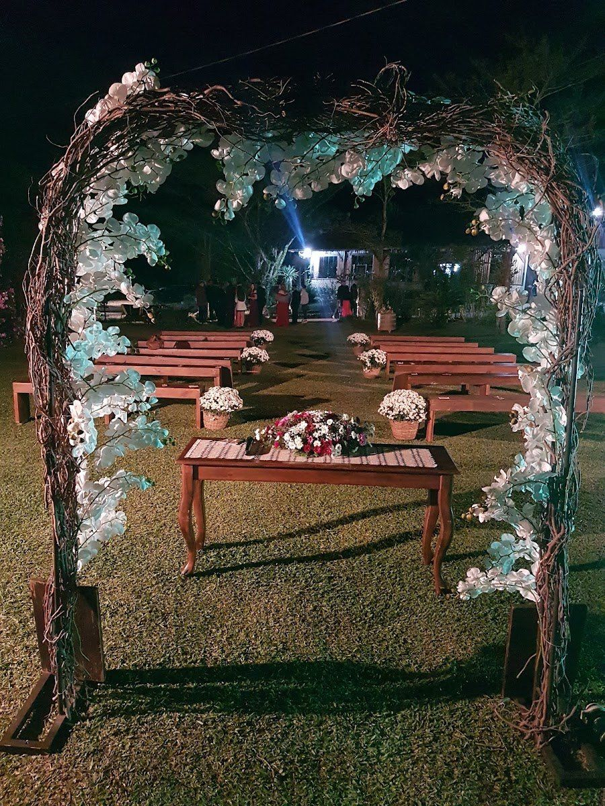
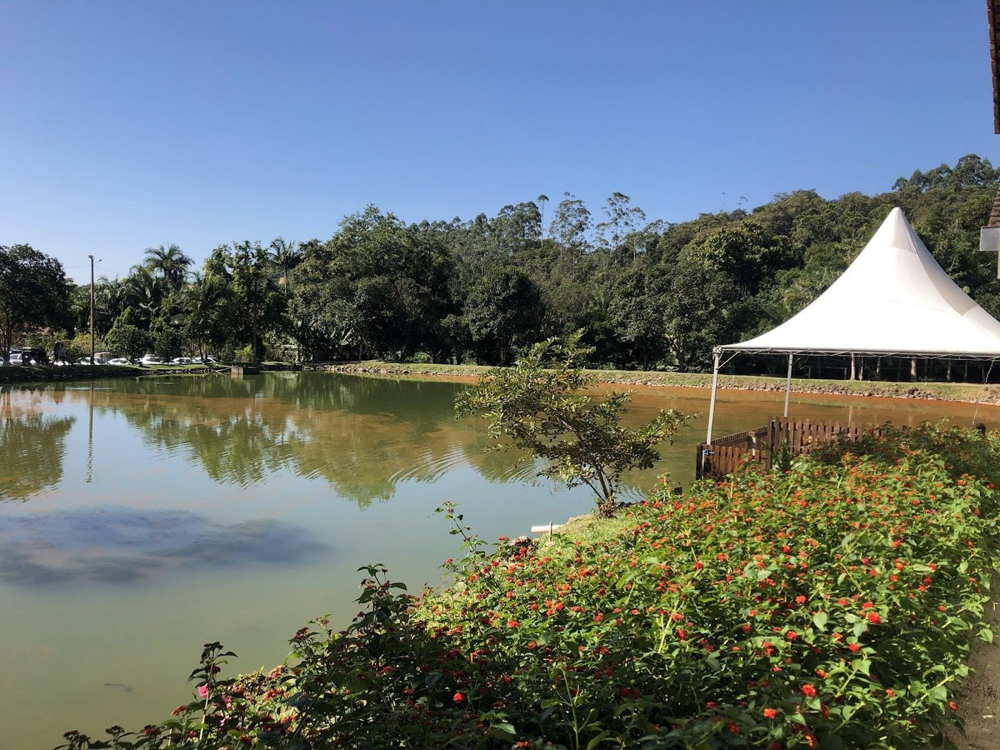
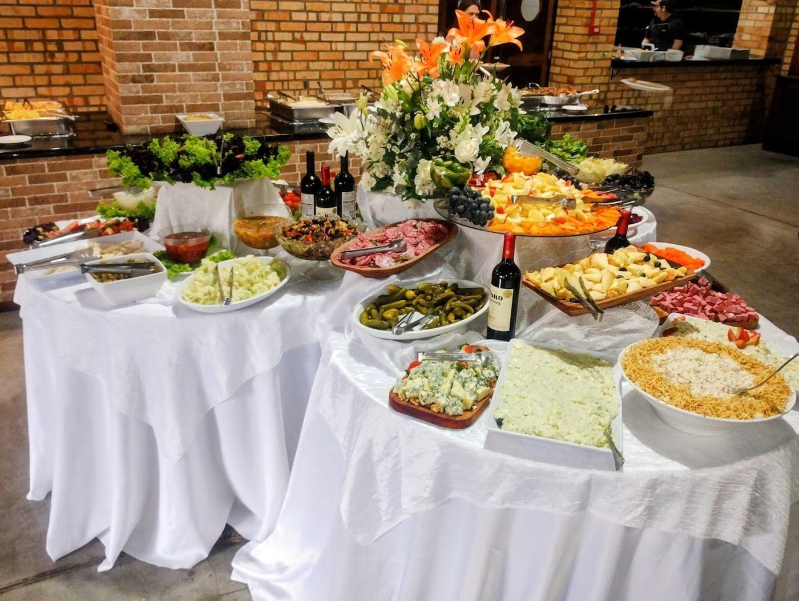
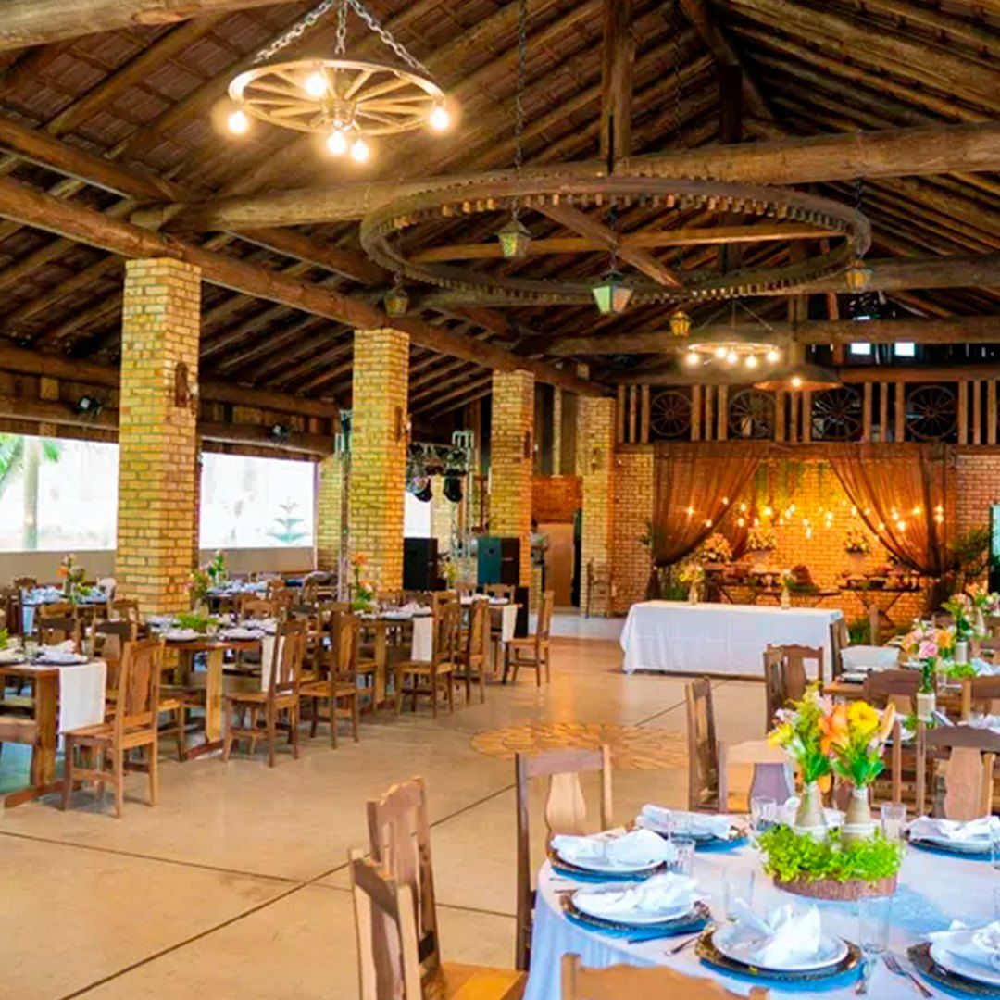
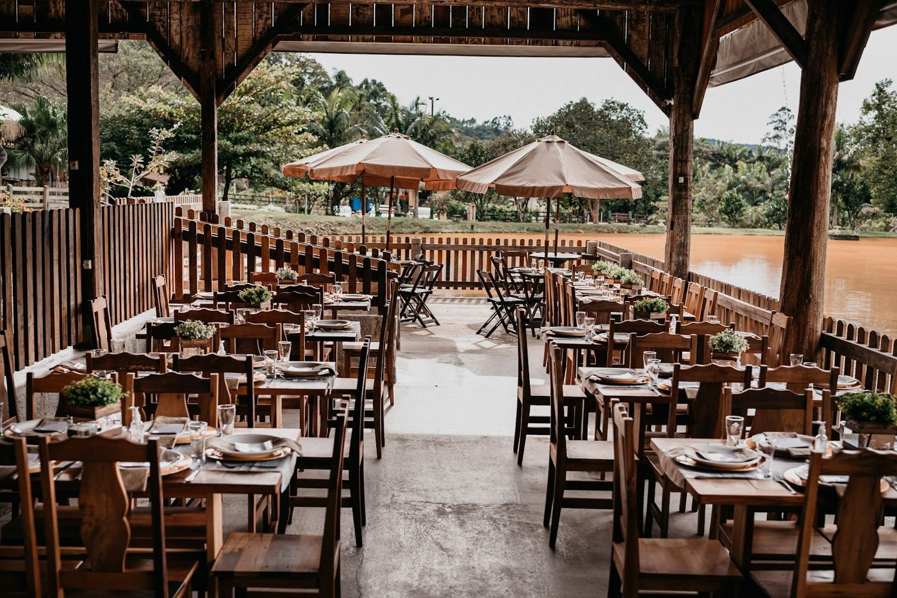
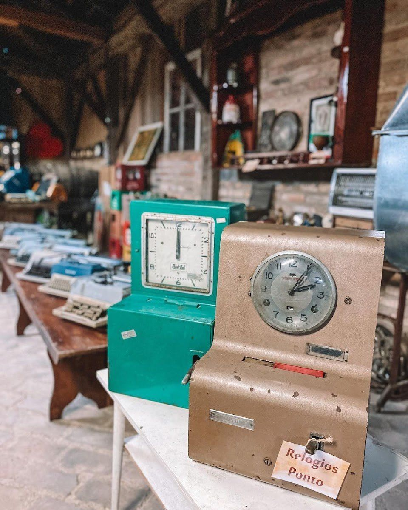
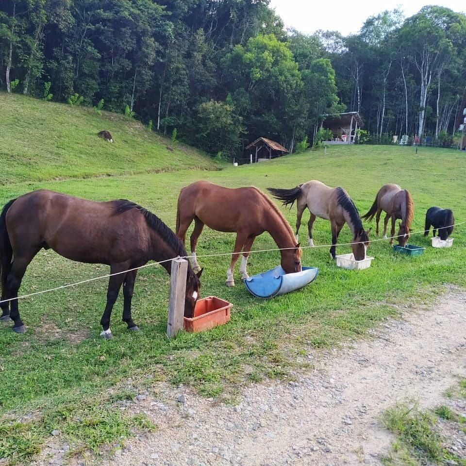
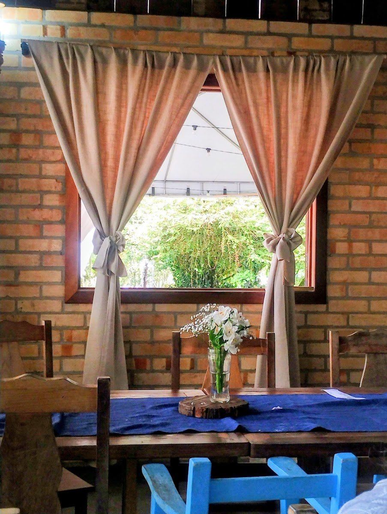
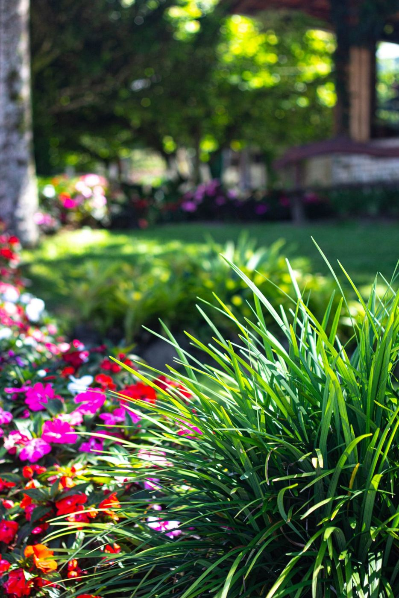

Três jeitos de viver a Buchmann
Sumário01 · Casamentos
A lagoa como cenário, o jardim como altar.
A cerimônia pode ser ao ar livre, com a lagoa e a mata ao fundo. Depois, a festa segue para o salão climatizado de tijolo à vista, com a gastronomia da própria casa.
Para os noivos, há um chalé exclusivo. Para os convidados que vêm de longe, uma casa para hospedagem no próprio espaço.




O que o espaço oferece
Lista do anúncio da Buchmann no casamentos.com.br. Capacidade, menus e valores: a confirmar pelo WhatsApp (o anúncio cita faixas diferentes).
Consultar datas- Cerimônia ao ar livre
- Lagoa para cerimônia e fotos
- Salão climatizado
- Gastronomia própria
- Mesas, cadeiras e louças
- Chalé exclusivo para os noivos
- Casa para hospedar convidados
- Espaço kids
- Estacionamento privativo
- Gerador de energia
“Organização, atenção e cuidado em todos os detalhes. Belíssimo cenário e palco onde a natureza é a essência do encanto para lindas celebrações.”@josenorbeycelebrante, celebrante de casamentos · Google · 23/06/2025
02 · Domingo em família
Um domingo inteiro no Alto Gasparinho.
Aberto ao público aos domingos, com buffet livre de comida típica italiana e churrasco.
- Pesque-pague no lago
- Museu de antiguidades
- Engenhos de cachaça e de farinha
- Parque para as crianças e salão de jogos
- Passeio a cavalo




03 · Chalés
Dormir à beira do lago.
Para quem vem a um casamento ou quer estender o domingo: os chalés ficam dentro do espaço. Quantidade, datas e valores pelo WhatsApp.
“Fomos convidados de um casamento no espaço e resolvemos alugar um chalé tbm. Foi ótimo!!! (...) No dia seguinte deixam uma cesta repleta de comida gostosa para o café da manhã.”
Avaliação no Google · 01/12/2024
Na agenda
Publicado pela Buchmann em 05/10/2026Almoço especial de Dia das Crianças
Com personagens infantis. R$ 99,00 por pessoa; crianças de 6 a 10 anos pagam 50%; até 5 anos não pagam.
794 avaliações no Google
“Local muito organizado, conheci através de um casamento. Tudo muito limpo e comida deliciosa.”
“A comida é sensacional! Tem pescaria, passeio de trator, pônei para as crianças.”
Contato
Vamos marcar uma visita?
- Endereço
- Rua José Rampelotti, 149 · Alto Gasparinho · Gaspar/SC
- (47) 99972-0314 (reservas e informações)
- Telefone
- (47) 3308-4750
- buchmanneventos@gmail.com
- @buchmanneventos
